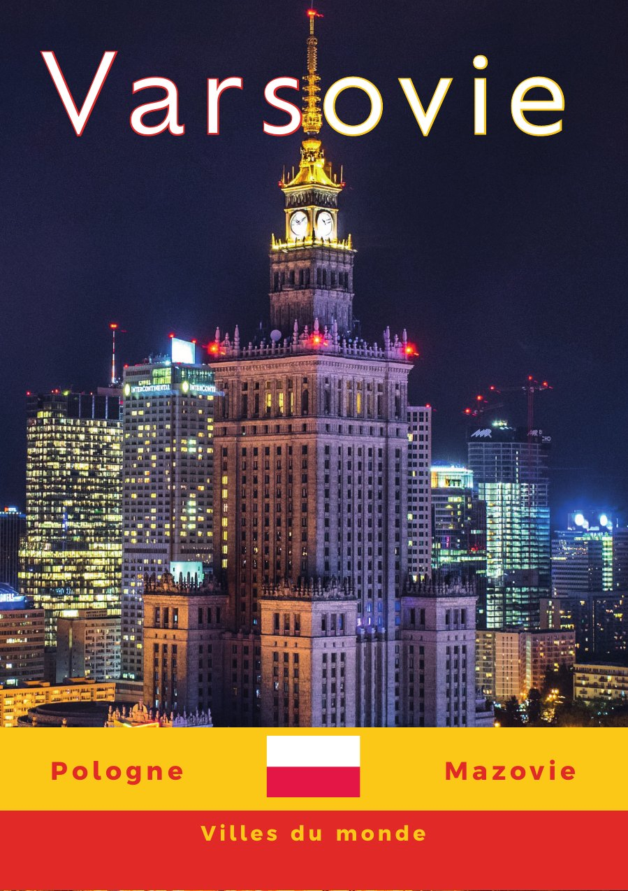
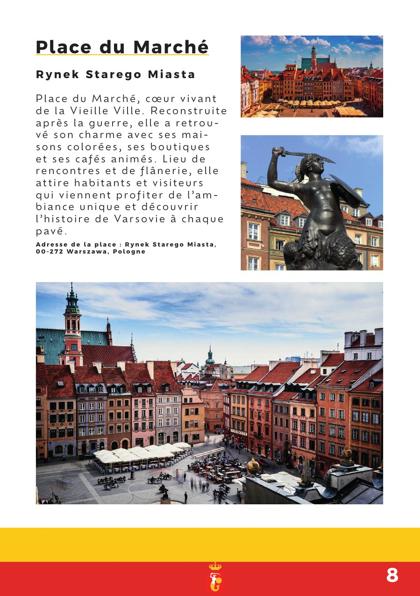

ContextThe topic
A brochure to discover Warsaw: getting around, sleeping, sightseeing, eating and going out. I wanted people to feel like going there as they turn the pages.
Design choicesA strong identity
The yellow and red stripes at the bottom of each page pick up the city's colours, and the Warsaw mermaid, the symbol of the city, runs through the pages as a common thread.
Yellow#F9C513
Red#E12A2A
White#FFFFFF
Night#14122E
ContentWhat's inside
- Contents and transport map
- Hotels: Europejski and Bristol
- History and places: Royal Castle, Palace of Culture, Market Square, Łazienki Park
- Museums: Fryderyk Chopin, Polish Army
- Food and nightlife, then a page of useful links with QR codes